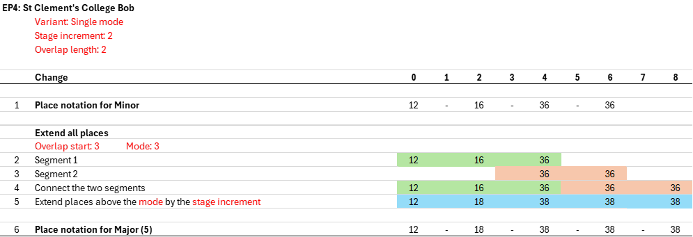
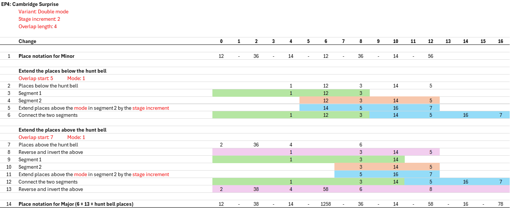
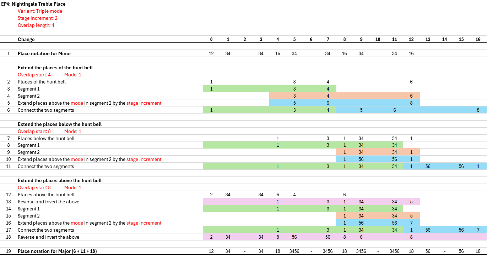
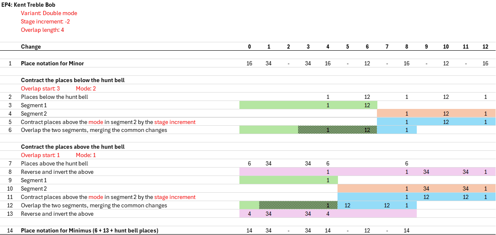

Extension Processes 2
4 a) Extension Process 4 - Introduction
EP4 replaces the former EP1 and EP3 extension processes, and also enables a greater range of extensions beyond those provided by EP1 and EP3. It produces extensions that can both keep the lead length fixed (replacing EP1), and expand the lead length (replacing EP3). EP4 can also contract a parent method to lower stages. In addition, EP4 can produce extensions that are a single stage higher, as well as the more common scenario of producing extensions that are an even number of stages (usually two) higher.
There are three variants of EP4: single mode, double mode, and triple mode. These are described below, and examples are provided further below for each one.
1.
In a single mode extension, a method's places are extended together, without any further separation, in a single process.
2.
In a double mode extension, a method's places are separated into below-the-hunt places and above-the hunt places, with each subset extended separately. Double mode extension relies on the hunt bell having a path that can only extend in one way, such as with Plain and Treble Dodging methods.
3.
In a triple mode extension, a method's places are separated into hunt bell places, below-the-hunt places, and above-the hunt places, with each subset extended separately. Triple mode extension is used when it is necessary to specify how hunt bell places extend, such as with certain Alliance and Treble Place methods.
The ability to use different modes simplifies the extension process for some methods, and supports a wider range of extensions in other cases. The above variants of EP4 are all described below. It will be seen that EP4 in all variants uses the same core process to generate extensions.
In addition to mode, there are two other key parameters to specify when using EP4:
1.
Stage increment: This specifies the increase in the stage of the extension versus the parent, and is a positive integer, except that in contraction it is a negative integer.
2.
Overlap length: This specifies how the half lead length changes in the extension versus the parent. It can be zero (giving an extension where the lead length doesn't ), or a positive integer. If the overlap length is a positive integer and the stage increment is positive, then the half lead length of the extension (versus the parent) increases by the overlap length. If the overlap length is a positive integer and the stage increment is negative, then contraction is being performed, and the half lead length decreases by the overlap length.
4 b) Extension Process 4 - Single Mode, Fixed Lead Length
The diagram below shows EP4 used in single mode with an overlap length of zero to extend Stedman Doubles.

The places in line 1 above either remain unchanged in line 2 if they are less than or equal to the mode, or they increase by the stage increment if they are greater than the mode. Since the mode in this example is 3, the places in line 2 are the same as line 1, except that 5th's place in line 1 becomes 7th's place in line 2.
EP4 in single mode with a fixed lead length can be used to extend Principles and Little methods. It can't be used for Hunters with non-Little paths. But note that Principles and Little methods can also be extended on an expanding lead length basis.
4 c) Extension Process 4 - Single Mode, Expanding Lead Length
The diagram below shows EP4 used in single mode with an expanding lead length to extend St Clement's College Bob Minor.

This example shows how overlapping segments are used to generate extensions. The first step is to list the place notation for a half lead of the method (line 1). By convention, the lead end change is shown first, and is labelled as change 0. The subsequent changes for a half-lead are then shown and are labelled as changes 1 to n, where n is half the lead length.
The next step is to separate the place notation into two overlapping segments, as specified by the Overlap start and Overlap length parameters. This gives segments 1 and 2, as shown in lines 2 and 3 above. These two segments are then connected as shown in line 4. Different extensions can be produced by selecting different overlap start and mode parameters.
Finally, the relevant places are extended. Since the mode is 3, the places in line 5 are the same as line 4 if they are 3rd's place or lower, otherwise they are 2 places higher.
4 d) Extension Process 4 - Double Mode
The diagram below shows EP4 used in double mode to extend Cambridge Surprise Minor.

In a double mode extension, the place notation is separated into places below the hunt bell and places above the hunt bell. Each of these subsets is then processed in a similar manner to the previous example, but with two differences:
1.
In a single mode extension, the place notation is extended after the two segments are connected. But in a double mode extension (and also triple mode), only the places in segment 2 are extended. The extension of the places therefore occurs before the two segments are connected, as can be seen in lines 4, 5 and 6 above.
2.
When extending the places above the hunt bell, the first step is to reverse and invert the places (see line 8 above). This restates the places on a basis that is equivalent to places below the hunt bell, such that the same process used to extend below-the-hunt places can be used for above-the-hunt places. A final step is then added to reverse and invert the resulting extended places, to convert them back to above-the-hunt places (see line 13).
Double mode is used to extend Hunters where the hunt bell path can only extend in one way, such as with Plain and Treble Dodging methods. This can include Little Plain and Little Treble Dodging methods (the extension will be 'less Little', but will still be Little).
4 e) Extension Process 4 - Triple Mode
The diagram below shows EP4 used in triple mode to extend Nightingale Treble Place Minor.

In a triple mode extension, the place notation is separated into places of the hunt bell, places below the hunt bell, and places above the hunt bell. Each of these subsets is then processed in a similar manner to the previous example.
Triple mode is used to extend Hunters where it is necessary to specify how hunt bell places extend, such as with certain Alliance and Treble Place methods. This can include Little methods where the hunt bell path could be extended in more than one way.
4 f) Extension Process 4 - Contraction
The diagram below shows EP4 used in double mode to contract Kent Treble Bob Minor.

In most cases, extension works in both directions. E.g. Kent Treble Bob Minor can be extended to Kent Treble Bob Major, and Kent Treble Bob Major can be contracted with the inverse process to obtain Kent Treble Bob Minor. The parent method is usually designated as the version of a method family that has the lowest stage, and then only extensions above that stage need to be considered.
However, is some cases a method can be contracted to give a recognizable version of the method at a lower stage, but it can't then be extended back to the original stage. The reason for this is that places can 'cross the mode'. Kent Treble Bob Minimus provides a good example of this. Kent is usually extended above the treble using a mode of 1, as this causes the 3-4 Kent places to remain in 3-4 as the method is extended.
However, when Kent is contracted from Minor to Minimus, places made in 6th's become places made in 4th's. But when attempting to re-extend Minimus back to Minor, it isn't possible under EP4 to specify that the 4th's places that are part of the Kent 3-4 places should remain in 4th's, but the other places in 4th's should extend to 6th's. Contraction therefore enables designation of Kent TB Minor as the parent stage, with higher stages obtained by extension, and one lower stage (Minimus) obtained by contraction.
It will be seen from the diagram above that the contraction process is the inverse of the extension process. Crucially, contraction only works if the places that become overlapped are the same in both segments.
4 g) Extension Process 4 - Single Stage
The diagram below shows EP4 used with a single stage increment to extend Brampford Speke Bob Minor.

[Notes: this process requires a different overlap length for the places below the hunt bell, compared with the overlap length for the places of the hunt bell and the places above the hunt bell. It is also necessary to discard a place that overflows the half-lead. An alternative process that addresses these issues is shown below, but it requires other modifications to the general process. At the moment, the process above also includes places made adjacent to a hunt bell place as part of the process to extend the hunt bell. All to be discussed.]
4 h) Extension Process 4 - Single Stage - Alternative Process
The diagram below shows EP4 used with a single stage increment to extend Brampford Speke Bob Minor.

Single stage extension requires two modifications to the processes seen previously:
1.
Single stage extension is used primarily with Plain methods. In such methods, the presence or absence of external places (in changes where there isn't an internal place) is the result of needing to keep the hunt bell plain hunting. For example, 7th's place at change 1 in Plain Bob Triples is not derived from 6th's place at change 1 in Minor—change 1 in Minor has the cross change. Single stage extension therefore can't be derived solely from operations on the place notation—it is also necessary to extend the movements of the hunt bell. The movement notation a→b is used to mean 'In this change, the hunt bell moves from place a to place b', where a and b are adjacent places. E.g. 1→2 and 5→4. Following on from this, only internal places need to be part of the extension process, as any additional external places needed result from the hunt bell movements.
2.
In single stage extension, segment 2 may not continue all the way to the half lead change, and segment 1 may continue past the end of segment 2. Start and end changes for segments 1 and 2 are therefore specified individually, instead of specifying an overlap start. The values chosen for the segment starts and ends must be consistent with the Overlap length parameter.
Using these two modifications, the diagram above shows how hunt bell places and movements, internal places below the hunt bell, and internal places above the hunt bell are each extended.
4 i) Extension Process 4 - Additional Considerations
Multiple hunt bells: The examples above are limited to methods with no more than one hunt bell. Methods with multiple coursing hunt bells can be extended in the same way. [Add examples of Grandsire extended in steps of two stages using double mode, and also in steps of one stage using triple mode.]
Non palindromic methods: The examples above use palindromic methods. Non-palindromic methods can be extended by applying the processes above separately to each half of the method. The changes of the second half of the method are reversed prior to applying the extension operations, and the resulting extended changes are then re-reversed as the final step. [Add an example of a non-palindromic extension.]
Jump changes and dynamic methods: EP4 is not designed to be used with methods containing jump changes, or dynamic methods.
1.
Requirements for extensions to be valid
- The Extension has the same number of Hunt Bells as the Parent Method, unless the Parent Method only has Hunt Bells and has no Working Bells, in which case the Extension also only has Hunt Bells.
- If the Parent Method comprises two or more Cycles of Working Bells of equal size, the Extension has this same feature.
- If the Parent Method has Plain Bob Leadheads, the Extension also has Plain Bob Leadheads. If the Parent Method does not have Plain Bob Leadheads, the Extension also does not have Plain Bob Leadheads.
- The Extension Construction used, when applied to the Parent Method in question, creates an Extension Path containing a minimum of 3 Methods (including the Parent Method) with Stages that are less than or equal to Stage 24.
Standard parameters: When the same results are obtained by using different overlap starts, use the overlap start that is closest to the start of the lead. When the same results are obtained by using different modes, use the lowest mode.
EP4 extension construction notation: [To be discussesd.]